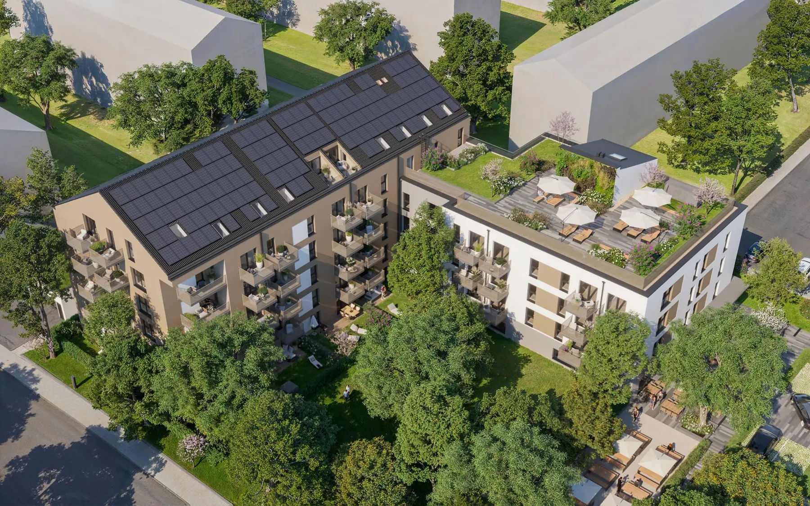

Weyprechthof, Milbertshofen
Wohnen und Genießen in der Max-Liebermann-Straße 6 – Ein Stück Tradition neu belebt
Wohnen und Genießen in der Max-Liebermann-Straße 6 – Ein Stück Tradition neu belebt
Der Standort an der Max-Liebermann-Straße 6 ist kein neutraler Boden – er ist ein Ort mit Erinnerung. Jahrzehntelang prägten eine Gaststätte, ein Biergarten und der benachbarte Kirchenplatz das soziale Gefüge des Harthof. Hier traf sich das Quartier: zum Essen, zum Feiern, zum Innehalten. Diese gewachsene Identität ist nicht nur historischer Hintergrund – sie bildet das Fundament der neuen Planung.
Das Gebäude erfüllt die neuesten Energiestandards und ist mit den renommierten Zertifikaten QNG-PLUS und DGNB Gold ausgezeichnet, was für die Qualität und Nachhaltigkeit des Projekts spricht.
Historische Lage mit Tradition und neuem Leben
Der Bestand erzählt von einer offenen, gemeinschaftsfördernden Nutzung: Gastronomie als sozialer Anker, Biergarten als erweiterter Wohnzimmertisch des Viertels. Für die neue Planung ist dies nicht Folklore, sondern programmatischer Auftrag: Der Biergarten bleibt, die Gaststätte kehrt zurück, und ein neuer Veranstaltungsraum stärkt die Rolle des Ortes als Treffpunkt für Nachbarschaft und Stadtteil..
Competition
Arbeiten in bayerischer Alpenidylle
in process

Nachverdichtung als urbane Chance
Der Standort Harthof soll wachsen – dichter, vielfältiger, urbaner. Die Planung erhöht Geschossigkeit und GFZ, stärkt die Wohnnutzung und schafft Raum. Die Transformation des Erdgeschosses hält die gewerbliche Nutzung bewusst schlank: Gastronomie bleibt L
Ein Quartier mit Zukunft
Gleichzeitig ergänzen Freiraumkonzepte und Wegebeziehungen die vorhandene Struktur, öffnen Blickbezüge zur Kirche und schaffen vielfältige Aufenthaltsräume.
Städtebau im Gleichgewicht
Was entsteht, ist ein urban gemischtes Gefüge:
· mit historisch verankerter Gastronomie,
· verdichtetem Wohnen,
· sozialer Durchmischung,
· und einem Kirchenplatz, der seine Bedeutung behält und gestärkt wird.
Der neue Weyprechthof verbindet Geschichte und Zukunft – und übersetzt räumliche Identität in zeitgemäße Stadtarchitektur.
Baustart und Fertigstellung
Die Bauarbeiten beginnen voraussichtlich im Februar 2025, die Fertigstellung ist für Juli 2027 geplant. Dann wird dieser Standort wieder ein beliebter Treffpunkt und neuer Wohnort in München, der sowohl modernste Wohnqualität als auch die Atmosphäre und Tradition des alten „Weyprechthofs“ bewahrt.
Auftraggeber: Trei Real Estate
Gesamtwohnfläche: 4.400 QM
BGF: – BGF: 11.468,56 QM – LPH: 1-5
Nutzung: Wohnbau mit geförderten Wohnungen
Besonderheiten: -82 Wohnungen, mehr als ein Drittel davon sind barrierefrei
-DGNB & QNG zertifiziert
Wir haben ihr Interesse geweckt? Sie haben Fragen oder wollen einen Termin mit uns vereinbaren? Dann hinterlassen Sie uns bitte eine Nachricht.
Wenn Sie uns eine Nachricht per Kontaktformular senden, so erheben, speichern und verarbeiten wir Ihre Daten nur, soweit dies für die Abwicklung Ihrer Anfragen und für die Korrespondenz mit Ihnen erforderlich ist. Hier finden Sie unsere Datenschutzerklärung.
Hinweis: Leider können wir aufgrund aktueller betrieblicher Umstände derzeit keine Schülerpraktika anbieten. Wir hoffen auf Ihr Verständnis und stehen für zukünftige Möglichkeiten gerne zur Verfügung. Vielen Dank.
Brückner Architekten GmbH Gabriel-Max-Straße 4 81545 München
BRÜCKNERINNEN Interior
REON Realisierung
PROPERTYMAX Maximales Baurecht
TGA Süddeutschland GmbH
Rendeffect GmbH
Wir haben Ihr Interesse geweckt?
Sie haben Fragen oder wollen einen Termin mit uns vereinbaren?